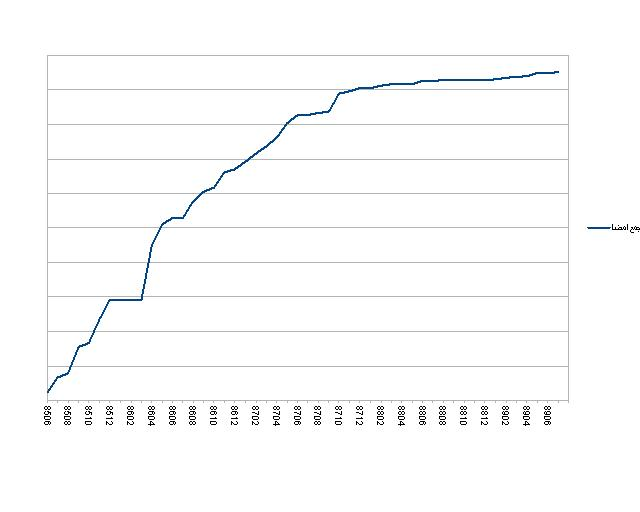
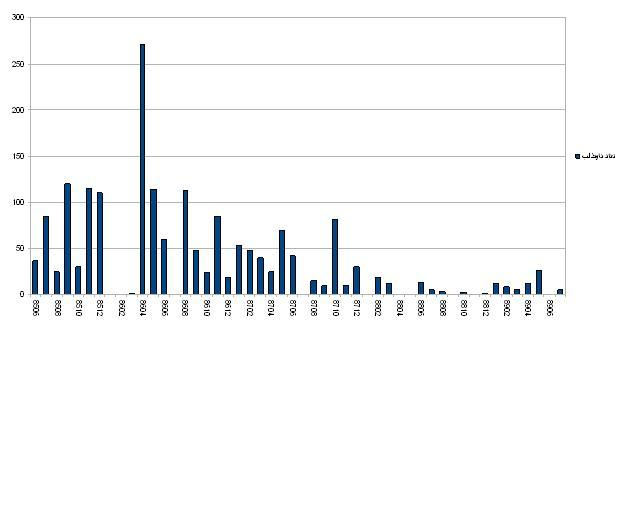
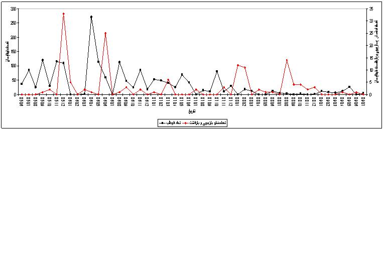

|
|

گزارش کمیته مستندسازی (قسمت اول) : تحلیل آماری با تاکید بر امضاهای جمع آوری شده
تنظیم : کمیته ی مستند سازی کمپین یک میلیون امضا
دو شنبه29 آذر 1389
تغییر برای برابری : کمپین یک میلیون امضا در پنجم شهريورماه 1385، در اعتراض به نابرابری حقوقی بین زنان و مردان و تبعیض قانونی علیه زنان با شعار تغییر برای برابری آغاز به کار کرد. هدف اوليه و بارز اين حركت تغيير و اصلاح موادی از قانون مدنی و مجازات اسلامی مربوط به زنان با ارتقای خواسته تغییر قانون از طريق جمع آوري يك ميليون امضا به صورت چهره به چهره از تمامي ايرانيان بالاتر از 18 سال بوده است. با این وجود اين كمپين در پي تحقق هدف اوليه خود، اهداف و پيامدهاي ديگري نيز داشته است از جمله:
1- آگاه سازي زنان ومردان در حوزه قوانين از طريق گفتگوي چهره به چهره و مستقيم
2- توانمندسازي فعالين اين حركت
3- گردهم آوردن گروه ها و گرايشهاي مختلف فكري زنان
4- همكاري و تعامل نسل هاي مختلف فعالين حقوق زن
5- فراهم كردن عرصه اي مشترك جهت همكاري و تعامل فعالين جنبشهاي مختلف مدني مانند دانشجويان، معلمان، كارگران و ...
کمیته مستندسازی که چند ماه پس از شروع به کار کمپین، فعالیت خود را آغاز کرد، یکی از اولین کمیته های شکل گرفته در کمپین تهران بود. این کمیته علاوه بر مستندسازی امضاهای جمع آوری و تحویل داده شده توسط داوطلبان کمپین، در پی ثبت و جمع آوری تمامی اسناد و مدارک کمپین است که این اسناد طیف وسیعی از گزارش های مختلف، فیلم ها، عکس ها، مصاحبه ها، کارهای هنری و ... را تشکیل می دهد. این اسناد و مدارک میراث فعالیتی جمعی است که تاریخ چند ساله کمپین، پویایی و خلاقیت این حرکت را نشان می دهد. با توجه به فعالیت های مختلف کمیته مستندسازی که تنها بخشی از آن مربوط به مستندکردن امضاها است، گزارش این کمیته در دو قسمت منتشر خواهد شد، قسمت اول در مورد تحلیل آماری امضاهای کمپین، گزارشی است که در ادامه می آید و در قسمت دوم به دیگر مستندات کمپین که بخش مهمی از فعالیت کمپین ها را تشکیل می دهد، پرداخته خواهد شد.
جمع آوری امضا، از شیوه های دستیابی به اهداف اولیه کمپین
بیش از چهار سال از فعالیت کمپین یک میلیون امضا می گذرد و فعالان این حرکت مدام با این پرسش رو به رو بوده اند که تعداد امضاها چقدر است و همواره این پاسخ را داده اند که طبق توافق اولیه در کمپین تا جمع آوری یک میلیون امضا، نه تعداد امضاها اعلام می شود و نه امضاها به نهاد قانونگزار تحویل داده خواهد شد. با این حال، با توجه به فراز و نشیب فراوان فراروی فعالان کمپین، تجربه ها و اوج و فرودهای زیاد در روند جمع آوری امضا، شاید نه صرفا تعداد امضاها که تحلیل تا اینجای داده ها (امضاها) در شناخت فعالان کمپین و همگان، از مخاطبانشان موثر افتد. گزارش زیر، ارائه تحلیلی از امضاهاي شمارش شده تا پايان مهرماه سال 1389 است که بر حسب متغيرهاي مختلف تا حدودي گوياي ميزان تاثيرگذاري، تنگناها و موانع موجود، ميزان گستردگي و.... اين حركت در طول دوره فعالیت آن است.
لازم به یادآوری است که تحلیل آماری این گزارش، بر اساس امضاهایی است که تاکنون به کمیته مستندسازی تحویل داده شده است و از آنجا که روند سیستماتیک یا اجباری برای تحویل امضا به این کمیته وجود ندارد، ممکن است که تعداد نامشخصی امضا در دست افراد یا گروه های مختلف به صورت پراکنده وجود داشته باشد. همچنین از تعداد امضاهایی که از منزل شخصی افراد، هنگام تفتیش منازل برده شده است، نیز آمار دقیقی در دست نیست. به صورت کلی می توان گفت که فرآیند جمع آوری امضا در طی این چهار سال از شرایط اجتماعی و سیاسی جامعه نه تنها جدا نبوده است که این شرایط تاثیر زیادی بر این فرآیند داشته است.
فرآیند مستندسازی امضاها
در گزارش کمیته مستندسازی سال 1387، منتشر شده بر روی سایت تغییر برای برابری، به چگونگی تشکیل کمیته مستندسازی و همچنین فرآیند انجام شده بر روی فرم های جمع آوری امضا به صورت کامل پرداخته شده است. شمارش و مستندسازی امضاها به همان روال گذشته ادامه دارد، به این صورت که امضاهای تحویل داده شده به کمیته مستندسازی در هر ماه به صورت جداگانه شمارش شده و هر برگه امضا شماره گذاری می شود. این شماره ترکیبی از تاریخ تحویل برگۀ امضا (سال، ماه، روز) و یک شمارۀ اختصاصی است مثلا 86023167 ، 67 امین برگه ای است که در روز 31 اردیبهشت سال 1386 به کمیته تحویل داده شده است. سپس هر برگه مهر شده و عکسی از آن گرفته می شود تا علاوه بر نسخه کاغذی، تصویر برگه های امضا هم ثبت شود.
همچنین برای کاهش خطا یا اشتباه در مورد تعداد امضاهای تحویل گرفته شده، افراد پس از تحویل برگه های امضای خود به اعضای کمیته مستندسازی، به آنها رسیدی مبنی بر تعداد امضاهای تحویلی، تعداد برگه امضا، ماه تحویل امضا و نام فرد تحویل دهنده و دریافت کننده داده می شود. این اطلاعات به همین صورت در بانک اطلاعاتی کمیته مستندسازی ثبت می گردد.
کارکرد هر امضا
نکته ای مهمی که پیش از تحلیل آماری امضاها باید به آن اشاره کرد، میزان کارکرد هر امضا است. به این معنی که هر امضای جمع آوری شده بر روی بیانیه کمپین، کارکردی بیش از یک امضای صرف داشته است. شیوه کار کمپین به صورتی است که با گفتگوی چهره به چهره و آشنا کردن مخاطب با تبعیضات قانونی، بحث از یک گفتگو یا امضای یکسویه فراتر رفته و با درگیر کردن مخاطب با موضوع، میزان پراکندگی آن را گسترش داده است. این مورد را می توان از تجربه های متفاوت افراد حین امضا جمع کردن، منتشر شده در بخش کوچه به کوچه کمپین دریافت. همچنین بارها پیش آمده که فعالان کمپین در شرایطی که امکان جمع آوری امضا نبوده است، تنها دفترچه های کمپین را بین مردم پخش کرده اند. موارد مشابه این بسیار است و می توان چنین نتیجه گرفت که آمار امضاها متفاوت از آمار کسانی است که در طول این مدت با نابرابری حقوقی و قانونی از طریق کمپین آشنا شده اند. عمومی شدن بحث تبعیضات قانونی در جامعه یکی از دستاوردهای مهم این حرکت است که نمی توان با اتکا به تعداد امضاهای جمع آوری شده، آن را نادیده گرفت.
از سوی دیگر خلاقیت کمپینی ها در ابداع روش های مختلف برای جمع آوری امضا - به صورت گروهی یا فردی- و تاثیر گذاری بر آگاهی و کنش مندی زنان و مردان جامعه نسبت به قوانین تبعیض آمیز مانند برگزاری تاترهای خیابانی و خانگی علاوه بر هدف اصلی خود، تجربه کار گروهی را در میان اعضا افزایش داده است.
تحلیل آماری امضاها
نمودار صعودی- تجمعی زير گوياي امضاي شمارش شده در تهران، شهرستان ها و امضاهای رسیده از خارج از کشور، از شهریور 1385 تا مهرماه 1389 است. شیب نمودار نشانگر میزان جمع آوری امضا در ماه های مختلف است، به این معنی که در مقاطعی که سرعت جمع آوری امضا بیشتر بوده، شیب نمودار تندتر شده است. بر همین اساس، همانطور که ملاحظه می شود، در دو سال اول آغاز به کار کمپین و خصوصا در ماه های ابتدایی آن جمع آوری امضا در شهرهای مختلف سرعت و تعداد بیشتری داشته است.

همانطور که نمودار نشان می دهد، میزان جمع آوری امضا در طول چهارسال گذشته، با فراز و فرود بسیاری روبرو بوده است. افت تعداد امضاها یا کاهش روند جمع آوری امضا ناشی از عوامل درونی و بیرونی است که این حرکت همواره با آنها مواجه بوده است که در زیر به برخی از آنها اشاره می شود.
عوامل درونی
در مقاطعي از پروسه چهار ساله كمپين پاره اي اختلافات در اجرا و برقراري روابط دموكراتيك ميان فعالين رخ داد كه دست كم در برخي از شهرها بر كند شدن روند جمع آوري امضا و افت تعداد آنها تاثير داشته است. البته نبايد اين نكته را هم ناديده گرفت: 1. بسیاری از فعالان کمپین جدا از اختلافات درونی بر جمع آوری امضا تاکید داشته و به آن عمل می کردند که در مستندات کوچه مواردی از تجربه و نظرات شان منعکس شده است 2. احتمالا بروز این اختلافات تا حدي گريزناپذير و جزء لاينفك بيشتر فعاليت هاي گروهي به ویژه در جوامعی است که برای تحقق دموکراسی و نهادینه شدن فعالیت های جمعی با موانع بسیار رو به رو هستند و طبیعتا بر رفتارهای جمعی هم تاثیر گذاراست.
پیامدهای منفی اين مساله گرچه بر چگونگی روابط و اعتماد بین فعالان کمپین تاثیر گذاشت و برای مدتی كند شدن حرکت جمع آوری امضا را موجب شد، تاثیرات مثبتی هم داشت و به طرح بحث و انتشار مستندات بسیاری توسط فعالان کمپین و حامیان آن دامن زد و مباحث گوناگونی در فرایند این کارجمعی مطرح کرد. مانند تحلیل مشکلات از منظرهای گوناگون، گسترش پرسش گری درمیان فعالان کمپین، رشد نيروهاي فعال و تجربه اندوزي در ارتقای هویت جمعی، مشق دموكراسي در كار جمعي و..... .
عوامل بیرونی (روش خشونت آميز در برخورد با حركتي مسالمت آميز)
با اینکه جمع آوری امضا حرکتی مسالمت آمیز در چارچوب قانون است، گزارشهاي تدوين شده درخصوص دستگيريها و بازداشتهاي فعالين نشان ميدهد تنها پس از 4 ماه از آغاز به كار كمپين برخورد با جمع آوري كنندگان امضا آغاز شده است. این روند از 21 آذرماه سال 1386 با بازداشت يكي از فعالين كمپين حين جمع آوري امضا در مترو تهران تا 10 بهمن 1387 كه بازداشت دو تن از گردآوري كنندگان امضا در كوهستان توچال روي داده است، ادامه داشته است و طی آن 15 نفر از فعالين كمپين تنها حين و به جرم جمع آوري امضا راهي بازداشتگاه ها شده اند و احكام متفاوتي از تعليق تا تبرئه گرفته اند. در اين مدت علاوه بر دستگيري فعالين كمپين در زمان جمع آوري امضا، تعدادي نيز به دلايل ديگري از جمله برگزاري و شركت در گارگاههاي آموزشي، برگزاري نشست و يا مهماني در منازل شخصي، فعاليت در وبلاگها و سايت هاي مرتبط با حوزه زنان و كمپين تحت بازجويي، بازداشت، اخراج از كار، تفتيش منزل و فشارهايي از اين دست قرار گرفته اند.
پيامدهاي حاصل از بازداشت فعالين از دو منظر قابل بررسي است: نخست تمركز بخشي از نيروهاي فعال براي انجام اقداماتي جهت آزادي فرد بازداشت شده نظير ديدار و همدردي با خانواده ها، اقدامات رسانه اي، تامين وثيقه و ... و ديگر ايجاد جو رعب و وحشت در جامعه و ريزش بخشي از داوطلبين و امضا كنندگان و كند شدن روند جمع آوري امضا در پي انتشار خبر دستگيريها. بدين ترتيب حاکمیت توانسته است با اعمال جو امنيتي، بازداشتها و تهديدهاي مختلف در موفقيت اين حركت- دست كم از بعد كمي- خلل ايجاد كند.
یکی دیگر از دلایل مهم افت میزان جمع آوری امضا در سال های 1388 و 1389، وقایع پس از انتخابات ریاست جمهوری سال 88 است که گسترش بی اعتمادی عمومی نسبت نهادهای حکومتی و افزایش فشار بر فعالان مدنی و سیاسی را به همراه داشت و علاوه بر کاهش جمع آوری امضا در میان فعالان کمپین، خود آنان را با چالش های مختلفی درباره ادامه روند کار کمپین مواجه کرد.
جمع آوری امضا به تفکیک استان ها
نمودار زیر میزان جمع اوری امضا در هر استان را بر مبنای محل اقامت فرد امضاکننده در ایران نشان می دهد. همانطور که ملاحظه می شود، بالاتر بودن تعداد افراد امضاکننده در هر استان رابطه معناداری با میزان فعالیت کمپین آن استان در جمع آوری امضا و فعالیت های مشابه در راستای برابری زنان و مردان دارد. این موضوع به طور خاص در تهران مشهود است که نسبت امضاهای جمع آوری شده در آن به صورت روزانه، در مقایسه با استان های دیگر دو سوم است. دلیل این امر را می توان تعداد بیشتر فعالین کمپین در تهران، تمرکز فعالیت ها در آن و همچنین بار امنیتی کمتر فعالیت در کمپین نسبت به استان ها یا شهرهای کوچکتر دانست. قابل ذکر است که در این آمار استان های تهران و البرز در یک دسته قرار گرفته اند.
بعد از تهران، استان های گیلان، کردستان، اصفهان، کرمانشاه، آذربایجان شرقی به ترتیب بیشترین میزان امضاها را به خود اختصاص داده اند. این امر تاییدکننده موضوع گفته شده در بالاست که هر چه کمپین در استان های مختلف به غیر از تهران فعالیت بیشتری داشته است، نه تنها تعداد امضاها بیشتر بوده که مسائل امنیتی پیش روی فعالان این شهرها نیز بیشتر بوده است. بر همین اساس یکی از چالش های پیش روی فعالان کمپین، چگونگی تمرکز زدایی از تهران، فعال سازی و توانمندسازی شهرها و استان های دیگر است.
داوطلبان جمع آوری کننده امضا
یکی دیگر از شاخص های تحلیلی در این گزارش، تعداد داوطلبان جمع آوری کننده امضا طی سال های فعالیت کمپین است. این میزان بر اساس نام افراد قید شده در پایین برگه های امضا، به عنوان فرد جمع آوری کننده امضا مشخص شده است. لازم به ذکر است که تعداد زیادی از برگه های امضا هم بدون نام جمع آوری کننده امضا وجود دارند، که همه آنها در یک دسته قرار گرفته اند.
همانطور که نمودار نشان می دهد، با همه اوج و فرودها، در سال اول کمپین، این تعداد بارها به بیش از صد نفر جمع آوری کننده امضا رسیده و در دو سال اخیر یعنی سال 88 و 89 کاهش فاحشی کرده است.

یکی از دلایل مهم کاهش تعداد داوطلبان جمع آوری کننده امضا و به تبع آن کم شدن تعداد امضاها، فشار بر روی فعالان کمپین بوده است. همانطور که نمودار زیر هم نشان می دهد، بین این دو متغیر ارتباط معکوسی وجود دارد، به این معنی که افزایش احضار، بازجویی و بازداشت فعالان کمپین (در مورد کمپین یا فعالیت های دیگر) در ماه های مختلف، تاثیر خود را بر ریزش نیرو و کاهش جمع آوری امضا در آن ماه، یا ماه های پس از آن داشته است. این موضوع از شرایط اجتماعی و سیاسی جامعه نیز تاثیر پذیرفته است و همین نسبت در مورد آن صادق است که مثال بارز آن را می توان حوادث پس از انتخابات ریاست جمهوری ایران و دستگیری های گسترده افراد در طول سال گذشته دانست. نمودار نیز این مورد را تایید می کند، چنانچه دیده می شود، در طول سال 88 تعداد داوطلبان جمع آوری کننده امضا، افت قابل توجهی داشته است. با این حال مشاهده می شود که این میزان در سال 89 مجددا روند رو به افزایشی از خود نشان داده است.

نتیجه گیری
کمپین یک میلیون امضا در طول فعالیت چهارساله خود نه تنها بر جامعه تاثیر گذاشته است که فعالیت آن بسیار از شرایط سیاسی و اجتماعی جامعه نیز تاثیر پذیرفته است. تاثیرگذاری آن را می توان در جوانب مختلف بررسی کرد، از گسترش آگاهی در جامعه و حساس نمودن افراد به بحث برابری زنان و مردان گرفته (از طریق گفتگوی چهره به چهره با مردم، برگزاری کارگاه های آموزشی، پخش بروشورهای آگاهی رسانی و ...) و همچنین عمومی کردن بحث حقوق زنان در جامعه تا حدی که به موضع گرفتن اشخاص حکومتی و مذهبی در مورد حقوق زنان و بحث قوانین، تا تاثیر بر تصویب قوانین و تغییر دو قانون ارث و دیه و ..انجامید تا ارتقای بسیج گری در جنبش زنان از طریق تجربه های کسب شده در کمپین .
تاثیرپذیری آن از شرایط جامعه نیز که بیشتر تاثیری منفی بر فعالیت این حرکت مسالمت آمیز و مدنی داشته را می توان در کندشدن فعالیت آن در مواردی مانند احضار، تفتیش منزل، بازجویی و بازداشت فعالین این حرکت، ایجاد ممنوعیت برای برگزاری جلسات، ممنوع الخروجی فعالان و ... بررسی کرد.
علاوه بر تاثیرات بیرونی کمپین بر جامعه، این حرکت از نظر درونی تجارب موفقی داشته است که جزو دستاوردهای غیر قابل انکار این حرکت است که نمونه های آن ساخت شبکه گسترده فعالان این حرکت در شهرهای مختلف ایران و کشورهای دیگر و تلاش برای تجربه کردن کار گروهی و ساخت سرمایه ای اجتماعی است.
نمودارها و تحلیل آماری امضاهای جمع آوری شده توسط کمپینی ها نشان داد که با وجودی که این فعالیت همواره با موانع و مشکلات درونی و بیرونی درگیر بوده است، فعالیت در آن متوقف نشده است هرچند که روند آن در مقاطعی کندتر است. بر همین اساس فعالین کمپین باید در پی شناخت فرصت ها و ارائه راهکارهایی برای افزایش و تسریع فعالیت خود باشند که از جمله آنها بازیابی مجدد بدنه فعلی، فعال کردن بیشتر داوطلبان جدید، تمرکز زدایی از تهران و کار بیشتر در استان های دیگر کشور است.